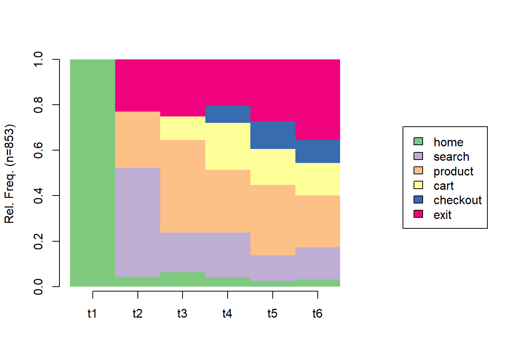
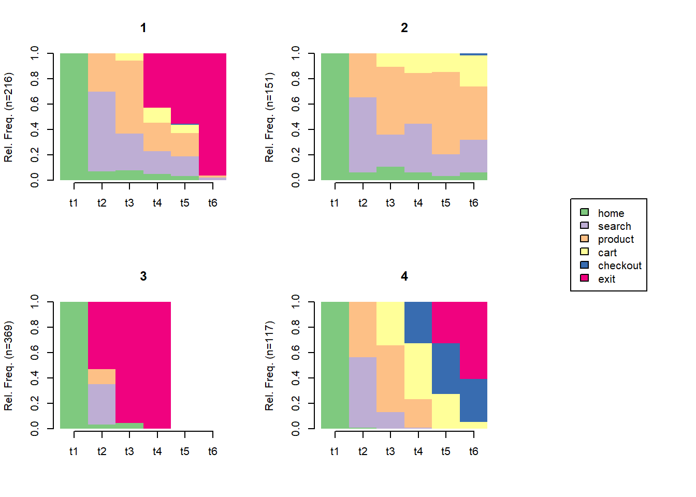

flowchart TB
LOG["Sessionized log:<br/>ordered action sequences"]
subgraph MK["Path and Markov models"]
M1["Transition probabilities<br/>between states"] --> M2["Removal-effect<br/>attribution"]
end
subgraph SA["Sequence analysis"]
S1["Optimal-matching<br/>distances"] --> S2["Clusters of<br/>behavioral types"]
end
subgraph DP["Deep sequence models"]
D1["RNN, LSTM, GRU"]
D2["Transformers,<br/>self-attention"]
D3["Survival models,<br/>hazard of churn"]
end
LOG --> MK
LOG --> SA
LOG --> DP
53 Clickstream and Behavioral Data
Every action a user takes inside a digital property leaves a trace. A page is requested, a button is tapped, a product is viewed, a search is run, an item is added to a cart, a video is scrubbed, a form is abandoned. Logged with a timestamp and a user or device identifier, these traces accumulate into a clickstream: a long, ordered record of who did what, where, and when. Behavioral log data of this kind is the connective tissue of digital marketing. It sits upstream of nearly every metric a firm reports, every recommendation it serves, and every attribution claim it makes about which channel “caused” a sale. Where survey data asks consumers what they intend, and panel data records what they ultimately bought, clickstream data records the process in between: the navigation, hesitation, comparison, and backtracking through which an intention becomes (or fails to become) a purchase (Montgomery et al. 2004; Bucklin and Sismeiro 2003).
Clickstream data is distinctive among marketing data in three respects, and each shapes the methods this chapter develops. First, it is sequential. The order of events carries information that any aggregation into counts destroys: a session that goes home page, search, product, cart, checkout is a different object from one that visits the same five pages in a different order, even though both produce identical page-view totals. Second, it is sparse and heavy-tailed at the user level. Most visitors view a handful of pages and never return; a small minority generates the bulk of events and revenue, so distributions of session length, dwell time, and visit frequency are governed by their tails rather than their means (Johnson et al. 2004). Third, it is observational and self-selected. Users choose what to click, and that choice is correlated with unobserved intent, so a naive regression of conversion on “pages viewed” recovers a mixture of behavior and latent motivation rather than a causal effect. The methods that follow are, in large part, disciplined responses to these three features.
This chapter develops clickstream analysis in the order a practitioner confronts it. It begins with applications, the marketing questions that behavioral logs are asked to answer. It then fixes the data structure, defining events, sessions, and sequences, and confronts the deceptively consequential problem of sessionization, illustrated on a simulated event log we carry through the rest of the chapter. From there it develops the two classical modeling traditions: path and Markov models, which treat navigation as a stochastic walk over states and yield a principled notion of channel attribution through the removal effect; and sequence analysis, which treats each user’s trajectory as a categorical sequence to be aligned, clustered, and visualized. It then surveys deep sequence models (recurrent and transformer architectures) that learn representations of behavior directly from raw event streams, returns to attribution as a problem in its own right, and closes with industry and production practice, the event pipelines and feature engineering that turn raw logs into model inputs without leaking the future into the past. Throughout, the worked code is genuinely runnable: we simulate an event log and analyze it with the markovchain and TraMineR packages. Figure 53.1 maps the three modeling traditions onto the shared object they consume.
53.1 Applications
Behavioral log data underwrites a wide span of marketing decisions. It is worth fixing the major application areas before the methods, because the choice of method is dictated by the question.
Web and app session analysis is the foundational use. Aggregating events into sessions yields the descriptive vocabulary of digital marketing: session counts, pages per session, dwell time, bounce rate, entry and exit pages, and the conversion rate of a session. These quantities are the raw material of dashboards and the denominators of optimization, and getting them right depends entirely on defining a session correctly (Section 53.2.3). Early marketing-science work established that browsing itself is a modelable behavior, not merely a precursor to purchase: the depth and dynamics of online search vary systematically across users and over the course of a visit (Johnson et al. 2004), and a site visit can be represented as a probabilistic walk whose transitions reveal goal-directed versus exploratory navigation (Bucklin and Sismeiro 2003). The conversion decision within and across visits is itself dynamic—the probability of buying evolves with accumulated visits and within-session behavior (Moe and Fader 2004; Sismeiro and Bucklin 2004)—and browsing spans competing sites, so a single-site log is a censored view of a cross-site process (Park and Fader 2004). At the fine grain of product search, clickstream reveals how consumers actually explore a category before choosing (Bronnenberg, Kim, and Mela 2016).
Path-to-purchase analysis asks how users move through the funnel: which sequences of pages and channels precede conversion, where they stall, and how the path differs between buyers and non-buyers. The path is rarely linear. Modern journeys loop across sessions, devices, and channels, and a central empirical finding is that the apparent “last step” before a purchase is a poor summary of what produced it (Montgomery et al. 2004).
Attribution is path analysis with a managerial edge: given a conversion preceded by several marketing touchpoints (a paid-search click, a display impression, an email, an organic visit), how much credit does each touchpoint deserve? Attribution is the budget allocation problem of digital marketing, and it is the application where the choice between naive heuristics and a model of the path matters most (Section 53.8) (Kannan and Li 2017).
Recommendation uses behavioral logs as the primary signal of preference. Co-view and co-purchase patterns, session context, and the sequence of recent interactions drive the “customers who viewed this also viewed” and “recommended for you” systems that mediate a large share of digital demand. Sequential recommendation, in particular, treats the next-item problem as a prediction over the user’s event sequence (Zheng et al. 2023).
Churn and retention prediction reframes the log as a leading indicator of disengagement. Declining session frequency, shortening visits, and shifts in the mix of activities often precede outright lapse, so a model trained on behavioral features can flag at-risk customers while intervention is still possible. Because lapse is a timing phenomenon, the natural statistical frame is survival analysis (Section 53.6), which models the hazard of churn as a function of behavior to date.
Bot and fraud detection turns the same sequential structure to a defensive purpose. Automated traffic, click fraud, and scraping leave behavioral signatures that differ from human browsing: implausibly regular inter-event timing, non-human navigation paths, and event rates no person could sustain. Distinguishing genuine engagement from synthetic traffic is a prerequisite for trustworthy metrics, since uncleaned bot traffic inflates every downstream number and corrupts attribution and recommendation alike. The same logic works inside a single form: keystroke timing separates applicants typing their own details from impostors typing someone else’s (Section 55.4).
Demand forecasting aggregates the log instead of following individuals. Views and carts are advance demand information about tomorrow’s purchases, and the pattern of which products shoppers compare reveals substitutes and complements that a SKU’s own sales history cannot. Graph neural networks over the product-stage transitions now turn that signal into probabilistic sales forecasts, including for promotion-driven spikes (Section 53.7).
These applications share a substrate. Each begins from the same event log and differs only in the target (a session metric, a path, a conversion, a next item, a lapse time, a bot flag) and in the modeling machinery brought to bear. We therefore turn first to the substrate itself.
53.2 Data Structure and Sessionization
53.2.1 Events, Sessions, and Sequences
The atom of clickstream data is the event: a single recorded interaction. At minimum an event carries three fields, an actor (a user or device identifier), an action (what happened, often called the event type or page), and a timestamp (when, to the second or millisecond). Real event records carry much more, a session or device context, the referring channel, page or screen attributes, the product or item touched, and device and geographic metadata, but the actor-action-time triple is the irreducible core. Formally, the raw log is a set of tuples \[ e = (u,\, a,\, t,\, \mathbf{x}), \tag{53.1}\] where \(u\) indexes the actor, \(a \in \mathcal{A}\) the action drawn from an event vocabulary \(\mathcal{A}\), \(t\) the timestamp, and \(\mathbf{x}\) any additional payload.
A session (or visit) groups a user’s events into a single episode of activity. A session is the unit at which most descriptive metrics are defined and the unit a path model walks through. The grouping is not given by the data; it is constructed by a sessionization rule, and that construction is the first place a clickstream analysis can quietly go wrong (Section 53.2.3).
A sequence is the ordered list of actions within a session (or, sometimes, within a user’s entire history), \[ s_u = (a_{u,1},\, a_{u,2},\, \dots,\, a_{u,L_u}), \tag{53.2}\] where the events are sorted by timestamp and \(L_u\) is the session length. The sequence is the object the methods of this chapter operate on. A Markov model treats it as a realization of a stochastic walk over \(\mathcal{A}\); sequence analysis treats it as a categorical string to be aligned and clustered; a recurrent network treats it as an ordered input to be encoded. The recurring theme is that order is information, and the analytical leverage of clickstream data comes precisely from refusing to discard it.
53.2.2 Simulating an Event Log
To make the rest of the chapter concrete and reproducible, we simulate a clickstream event log with realistic structure: many users, multiple sessions per user separated by idle gaps, and within-session navigation governed by a plausible page-transition process that culminates, for some sessions, in a purchase. We carry this single simulated log through the sessionization, Markov, and sequence-analysis demonstrations that follow. Figure 53.2 sketches the page-transition process that generates each session: a forward funnel from home toward checkout, with backtracking and a persistent risk of exit at every page.
flowchart LR HM["home"] -->|"0.45"| SR["search"] HM -->|"0.25"| PD["product"] SR -->|"0.50"| PD PD -->|"0.30"| CT["cart"] PD -->|"0.20"| SR CT -->|"0.45"| CO["checkout"] CT -->|"0.20"| PD CO -->|"1.00"| EX["exit<br/>(absorbing)"] HM -->|"0.25"| EX SR -->|"0.25"| EX PD -->|"0.20"| EX CT -->|"0.20"| EX
Code
library(tidyverse)
set.seed(55)
# --- Event vocabulary and a plausible page-transition process -----------------
# States are pages a user can be on. "home", "search", "product", "cart",
# "checkout" form the conversion funnel; "exit" is an absorbing leave state.
pages <- c("home", "search", "product", "cart", "checkout", "exit")
# Row-stochastic transition matrix: P[from, to]. These probabilities encode a
# realistic funnel where most users browse and leave, a minority advance to cart,
# and fewer still check out. Each row sums to 1.
P <- matrix(0, nrow = length(pages), ncol = length(pages),
dimnames = list(pages, pages))
P["home", ] <- c(0.05, 0.45, 0.25, 0.00, 0.00, 0.25)
P["search", ] <- c(0.05, 0.15, 0.50, 0.05, 0.00, 0.25)
P["product", ] <- c(0.05, 0.20, 0.25, 0.30, 0.00, 0.20)
P["cart", ] <- c(0.02, 0.03, 0.20, 0.10, 0.45, 0.20)
P["checkout", ] <- c(0.00, 0.00, 0.00, 0.00, 0.00, 1.00) # checkout -> exit
P["exit", ] <- c(0.00, 0.00, 0.00, 0.00, 0.00, 1.00) # absorbing
stopifnot(all(abs(rowSums(P) - 1) < 1e-9)) # rows are proper distributions
# --- Walk a single session over the page-transition process ------------------
# A session starts on "home", steps through P until it hits "exit", and is
# capped at max_len steps to keep sessions finite.
simulate_session <- function(P, start = "home", max_len = 20) {
states <- start
cur <- start
for (i in seq_len(max_len)) {
nxt <- sample(colnames(P), size = 1, prob = P[cur, ])
states <- c(states, nxt)
cur <- nxt
if (cur == "exit") break
}
states
}
# --- Generate users, sessions, and timestamped events ------------------------
n_users <- 400
out <- vector("list", 0)
for (u in seq_len(n_users)) {
user_id <- sprintf("u%04d", u)
n_sessions <- 1 + rpois(1, lambda = 1.2) # 1+ sessions per user
# First session begins at a random time within a 30-day window.
clock <- as.POSIXct("2025-01-01 00:00:00", tz = "UTC") +
runif(1, 0, 30 * 24 * 3600)
for (sess in seq_len(n_sessions)) {
visit <- simulate_session(P)
# Inter-event gaps within a session: seconds to a few minutes.
gaps <- c(0, round(rexp(length(visit) - 1, rate = 1 / 40)))
ts <- clock + cumsum(gaps)
out[[length(out) + 1]] <- tibble(
user_id = user_id,
page = visit,
ts = ts
)
# Idle gap before the user's next session: hours to days.
clock <- max(ts) + runif(1, 2 * 3600, 4 * 24 * 3600)
}
}
events <- bind_rows(out) |>
arrange(user_id, ts) |>
mutate(event_id = row_number())
head(events, 10)
#> # A tibble: 10 × 4
#> user_id page ts event_id
#> <chr> <chr> <dttm> <int>
#> 1 u0001 home 2025-01-07 13:04:29 1
#> 2 u0001 search 2025-01-07 13:06:00 2
#> 3 u0001 search 2025-01-07 13:06:58 3
#> 4 u0001 exit 2025-01-07 13:07:33 4
#> 5 u0001 home 2025-01-09 14:11:51 5
#> 6 u0001 search 2025-01-09 14:12:00 6
#> 7 u0001 search 2025-01-09 14:12:33 7
#> 8 u0001 product 2025-01-09 14:13:25 8
#> 9 u0001 product 2025-01-09 14:15:52 9
#> 10 u0001 product 2025-01-09 14:15:58 10As Table 53.1 shows, the log now has the actor-action-time structure of Equation 53.1: a user_id, a page (the action), and a ts timestamp, with one row per event. Its scale is modest but its shape is realistic, with users contributing a variable number of sessions and sessions of variable length governed by the funnel process.
Code
# Basic shape of the simulated log.
events |>
summarise(
n_events = n(),
n_users = n_distinct(user_id),
span_days = as.numeric(difftime(max(ts), min(ts), units = "days"))
)
#> # A tibble: 1 × 3
#> n_events n_users span_days
#> <int> <int> <dbl>
#> 1 4147 400 37.853.2.3 Sessionization
The raw log records events but not sessions; the analyst must impose them. The canonical rule is inactivity-based: a new session begins whenever the gap since a user’s previous event exceeds a timeout threshold, conventionally thirty minutes in web analytics. The choice of threshold is consequential. Too short a timeout fragments a single deliberation into multiple sessions and inflates session counts while deflating pages-per-session; too long a timeout merges distinct visits and corrupts entry- and exit-page statistics. There is no universally correct threshold, and a defensible analysis either justifies the threshold from the empirical gap distribution or reports sensitivity to it.
We sessionize the simulated log with a thirty-minute timeout. Because we simulated idle gaps of hours to days between sessions and gaps of seconds to minutes within them, the rule should recover the session structure we built in.
Code
timeout_secs <- 30 * 60 # 30-minute inactivity timeout
sessions_df <- events |>
arrange(user_id, ts) |>
group_by(user_id) |>
mutate(
gap_secs = as.numeric(difftime(ts, lag(ts), units = "secs")),
new_session = is.na(gap_secs) | gap_secs > timeout_secs,
session_seq = cumsum(new_session)
) |>
ungroup() |>
mutate(session_id = paste(user_id, session_seq, sep = "_"))
# Session-level summary: length, duration, and whether the funnel was completed.
session_summary <- sessions_df |>
group_by(session_id, user_id) |>
summarise(
n_events = n(),
duration_s = as.numeric(difftime(max(ts), min(ts), units = "secs")),
converted = any(page == "checkout"),
.groups = "drop"
)
session_summary |>
summarise(
n_sessions = n(),
mean_events = mean(n_events),
median_duration = median(duration_s),
conversion_rate = mean(converted)
)
#> # A tibble: 1 × 4
#> n_sessions mean_events median_duration conversion_rate
#> <int> <dbl> <dbl> <dbl>
#> 1 853 4.86 116 0.210The summary reports the descriptive vocabulary of session analysis: the number of sessions recovered, the mean events per session, the median session duration, and the overall conversion rate. Each of these would shift if the timeout changed, which is why sessionization is a modeling choice and not a clerical one.
53.2.4 The Conversion Funnel
A funnel is the canonical descriptive summary of path-to-purchase behavior: the share of sessions that reach each successive stage of a defined sequence. Funnels make drop-off visible, localizing where users are lost, and they are the first artifact a practitioner builds before any model. We define a five-stage funnel over the page vocabulary and compute, for each stage, the fraction of sessions that ever reached it and the step-to-step retention.
Code
funnel_stages <- c("home", "search", "product", "cart", "checkout")
n_sessions <- n_distinct(sessions_df$session_id)
# For each funnel stage, count the sessions that ever reached it.
funnel_tbl <- tibble(stage = funnel_stages) |>
mutate(
sessions = map_int(stage, function(stg) {
sessions_df |>
filter(page == stg) |>
distinct(session_id) |>
nrow()
}),
reach = sessions / n_sessions,
step_retention = reach / lag(reach)
)
funnel_tbl
#> # A tibble: 5 × 4
#> stage sessions reach step_retention
#> <chr> <int> <dbl> <dbl>
#> 1 home 853 1 NA
#> 2 search 517 0.606 0.606
#> 3 product 483 0.566 0.934
#> 4 cart 285 0.334 0.590
#> 5 checkout 179 0.210 0.628In Table 53.2, the reach column is the share of sessions touching each stage; step_retention is the conditional probability of advancing from the previous stage. The sharpest drop-offs in step_retention are the points a conversion-rate optimization program would target. Note that this funnel counts whether a stage was ever reached in a session, not whether stages occurred in strict order; an order-sensitive funnel, which only credits a stage if it followed the prior stage, is stricter and is the more honest summary when backtracking is common.
53.3 Path and Markov Models
53.3.1 Navigation as a Stochastic Walk
The defining structure of clickstream data is sequence, and the simplest faithful model of a sequence is a Markov chain. A first-order Markov model treats the next page as depending only on the current page, not on the full history before it, \[ \Pr(a_{t+1} = j \mid a_t = i,\, a_{t-1},\, \dots) \;=\; \Pr(a_{t+1} = j \mid a_t = i) \;=\; p_{ij}, \tag{53.3}\] where the transition probabilities \(p_{ij}\) collect into a row-stochastic matrix \(\mathbf{P}\). The first-order (memoryless) assumption is strong, and a substantial marketing-science literature relaxes it: higher-order chains condition on the last \(k\) pages, hidden-Markov models posit latent states that govern observed navigation (Netzer, Lattin, and Srinivasan 2008), and dynamic models let transition probabilities evolve within a visit (Montgomery et al. 2004; Bucklin and Sismeiro 2003). Yet the first-order chain is the right starting point. It is interpretable, it is cheap to estimate from a transition-count matrix, and, as we will see, it supports a clean and widely used notion of attribution.
53.3.2 Estimating the Transition Matrix
We estimate the first-order transition matrix from the sessionized log using the markovchain package, whose tooling for fitting and manipulating discrete-time Markov chains in R is documented by Spedicato [2017, The R Journal 9(2), DOI 10.32614/rj-2017-036]. The estimator is simply the matrix of empirical transition frequencies, normalized to rows. We build, for each session, the ordered vector of pages and pass the list of sequences to markovchainFit.
Code
library(markovchain)
# One ordered character vector of pages per session.
seq_list <- sessions_df |>
arrange(user_id, ts) |>
group_by(session_id) |>
summarise(path = list(page), .groups = "drop") |>
pull(path)
# Maximum-likelihood fit of a first-order chain from the list of sequences.
fit <- markovchainFit(data = seq_list, method = "mle")
mc <- fit$estimate
# The estimated transition matrix (rounded for display).
round(mc@transitionMatrix, 3)
#> cart checkout exit home product search
#> cart 0.101 0.489 0.167 0.025 0.186 0.033
#> checkout 0.000 0.000 1.000 0.000 0.000 0.000
#> exit 0.000 0.000 0.000 0.000 0.000 0.000
#> home 0.000 0.000 0.232 0.047 0.240 0.481
#> product 0.306 0.000 0.190 0.048 0.262 0.193
#> search 0.041 0.000 0.252 0.041 0.522 0.146The fitted matrix recovers, up to sampling noise, the data-generating process of Section 53.2.2: high probability of leaving from home, a search-to-product pathway, and the cart-to-checkout step that defines conversion. Because the markovchain object knows that exit is absorbing, it exposes the chain’s structure directly.
Code
# Which states are absorbing? (Self-probability 1.)
absorbingStates(mc)
#> character(0)
# Steady-state behavior is degenerate here because every walk ends in "exit";
# the informative object is the matrix of transient transitions above, not a
# stationary distribution. We confirm the absorbing structure instead.
diag(mc@transitionMatrix)["exit"]
#> exit
#> 0The estimated chain is a compact, interpretable model of navigation. It answers questions a funnel cannot: not merely how many sessions reached cart, but the probability that a user in the cart proceeds to checkout versus backtracks to keep browsing. Those conditional probabilities are the substance of path analysis, and they are exactly what attribution will exploit.
53.3.3 Markov Attribution and the Removal Effect
Markov chains supply a principled answer to the attribution question through the removal effect. The idea, developed for graph-based online attribution by Anderl, Becker, von Wangenheim, and Schumann [2016, International Journal of Research in Marketing 33(3), 457-474, DOI 10.1016/j.ijresmar.2016.03.001], is to model journeys as walks on a graph whose nodes are channels (or pages), with two special absorbing nodes, conversion and null (no conversion). The value of a channel is then defined by what happens when it is removed from the graph: the removal effect of channel \(c\) is the proportional drop in overall conversion probability when all paths through \(c\) are diverted to the null state, \[
\text{RE}(c) \;=\; \frac{\pi_{\text{conv}} - \pi_{\text{conv}}^{(-c)}}{\pi_{\text{conv}}},
\tag{53.4}\] where \(\pi_{\text{conv}}\) is the conversion probability of the full chain and \(\pi_{\text{conv}}^{(-c)}\) is the conversion probability after removing \(c\). Channels whose removal collapses conversion are credited heavily; channels whose removal barely moves it are credited little. Normalizing removal effects across channels yields a data-driven attribution that respects the path rather than mechanically crediting the first or last touch (Section 53.8).
We implement the removal effect on our page chain by treating checkout as conversion and exit-without-checkout as the null state, then comparing the absorption probability into conversion with and without each transient page. The absorption probability is computed in closed form from the chain’s transition matrix.
Code
tm <- mc@transitionMatrix
# Define the two absorbing outcomes. "checkout" is conversion. We add an explicit
# "null" outcome: from "exit", a session that never reached checkout is a non-
# conversion. In this chain "exit" already absorbs, so we treat reaching "exit"
# without having passed through "checkout" as the null outcome. For the removal-
# effect computation we work with the conversion-absorption probability from the
# entry state "home".
# Probability of being absorbed into "checkout" starting from "home", computed by
# solving the linear system for absorption probabilities of a Markov chain.
absorb_conv_prob <- function(tm, entry = "home", conv = "checkout",
absorbing = c("checkout", "exit")) {
states <- rownames(tm)
transient <- setdiff(states, absorbing)
Q <- tm[transient, transient, drop = FALSE] # transient-to-transient
R <- tm[transient, absorbing, drop = FALSE] # transient-to-absorbing
N <- solve(diag(nrow(Q)) - Q) # fundamental matrix
B <- N %*% R # absorption probabilities
B[entry, conv]
}
base_conv <- absorb_conv_prob(tm)
# Removal effect: zero out a transient page by diverting all its inflow to "exit"
# (the null outcome), then recompute conversion probability from "home".
transient_pages <- setdiff(rownames(tm), c("checkout", "exit", "home"))
removal <- map_dfr(transient_pages, function(pg) {
tm2 <- tm
# Send everything that would go TO page `pg` straight to "exit" instead,
# then make `pg` itself a dead-end into "exit".
tm2[, "exit"] <- tm2[, "exit"] + tm2[, pg]
tm2[, pg] <- 0
tm2[pg, ] <- 0
tm2[pg, "exit"] <- 1
conv_without <- absorb_conv_prob(tm2)
tibble(page = pg,
conv_without = conv_without,
removal_effect = (base_conv - conv_without) / base_conv)
})
removal |>
mutate(attribution = removal_effect / sum(removal_effect)) |>
arrange(desc(removal_effect))
#> # A tibble: 3 × 4
#> page conv_without removal_effect attribution
#> <chr> <dbl> <dbl> <dbl>
#> 1 cart 0 1 0.380
#> 2 product 0.0134 0.936 0.355
#> 3 search 0.0634 0.698 0.265In Table 53.3, the removal_effect column quantifies how much each page contributes to conversion: a page with a large removal effect is one the conversion paths depend on, so diverting its traffic to the null outcome sharply lowers the chance of reaching checkout. The attribution column normalizes these effects into shares that sum to one, the quantities a budget-allocation exercise would use. The same machinery, applied to a chain whose states are marketing channels rather than pages, is exactly the graph-based attribution model of Anderl et al. (2016); the page-level version here is a faithful, smaller illustration of the identical logic.
53.4 Sequence Analysis
Markov models compress each sequence into transition counts and, in doing so, discard the identity of the individual trajectory. Sequence analysis, a tradition imported into the social sciences from biology, takes the opposite stance: it treats each user’s ordered sequence of states as a holistic object, to be compared with other sequences, aligned, clustered into behavioral types, and visualized as a population. The canonical R toolkit is TraMineR, whose methods for representing, summarizing, and visualizing categorical state sequences are documented by Gabadinho, Ritschard, Müller, and Studer [2011, Journal of Statistical Software 40(4), DOI 10.18637/jss.v040.i04].
53.4.1 Representing Sequences
TraMineR operates on a state-sequence object in which each row is one unit’s trajectory over aligned positions. We build, for each session, the sequence of pages up to a fixed number of positions, pad shorter sessions, and construct the sequence object.
Code
library(TraMineR)
max_pos <- 6 # align sessions to their first 6 events (the funnel depth)
seq_wide <- sessions_df |>
arrange(user_id, ts) |>
group_by(session_id) |>
mutate(pos = row_number()) |>
ungroup() |>
filter(pos <= max_pos) |>
mutate(pos = factor(pos, levels = 1:max_pos)) |>
select(session_id, pos, page) |>
pivot_wider(names_from = pos, values_from = page,
names_prefix = "t", names_expand = TRUE) |>
arrange(session_id)
# Columns t1..t6 hold the page at each position; NA past the session's end.
state_cols <- paste0("t", 1:max_pos)
# Define the alphabet and build the TraMineR sequence object.
click_seq <- seqdef(
seq_wide,
var = state_cols,
alphabet = pages,
states = pages,
xtstep = 1
)
# How many sequences, and a glance at the first few.
print(click_seq[1:5, ])
#> Sequence
#> 1 home-search-search-exit
#> 2 home-search-search-product-product-product
#> 3 home-exit
#> 4 home-exit
#> 5 home-search-home-exit53.4.2 State Distributions and Clustering
A first, population-level view is the state-distribution plot: at each sequence position, the share of sessions occupying each state. Figure 53.3 shows how the population flows through the funnel over event positions, with users draining into exit as positions advance.
Code
seqdplot(click_seq, border = NA, with.legend = "right",
main = NULL)
To move from description to typology, we cluster sequences by dissimilarity. TraMineR computes pairwise distances between sequences, the classic choice being optimal matching (OM), which defines the distance between two sequences as the minimum cost of insertions, deletions, and substitutions needed to transform one into the other. Clustering the resulting distance matrix groups sessions into behavioral archetypes, short bouncers, deep browsers, converters, that a population of raw logs would otherwise hide; Table 53.4 reports the sizes of the four clusters so recovered.
Code
library(cluster)
# Substitution costs derived from observed transition rates; indel cost fixed.
sm <- seqsubm(click_seq, method = "TRATE")
om <- seqdist(click_seq, method = "OM", sm = sm, indel = 1)
# Ward clustering of the distance matrix into 4 behavioral types.
hc <- agnes(as.dist(om), method = "ward")
cl4 <- cutree(hc, k = 4)
table(cluster = cl4)
#> cluster
#> 1 2 3 4
#> 216 151 369 117
The four panels of Figure 53.4 are interpretable behavioral types: clusters that exit almost immediately, clusters that linger in search and product, and clusters that reach cart and checkout. This is the payoff of treating sequences holistically. Rather than a single average transition matrix, sequence clustering surfaces a heterogeneous population of navigation styles, which is the empirical reality of behavioral data and the starting point for segmentation, targeting, and personalized intervention.
53.4.3 From Session Types to Usage Trajectories
Nothing in the sequence-analysis machinery requires the unit of time to be a session. Run the same logic over months instead of minutes, with features of a product rather than pages as the state space, and it answers a question the session-level view cannot: what happens to a customer’s usage after adoption, once the novelty and the onboarding campaign are spent. Fang et al. (2026) do exactly this with longitudinal feature-level logs from a mobile banking app, and their framing is worth importing. Usage is decomposed into intensity—frequency and depth—and length, and the population resolves into five distinct longitudinal trajectories, among them expanders, who progressively recruit new features, and maximizers, who drive one feature set hard. Those trajectory memberships are not descriptive curiosities: they predict new-feature adoption, willingness to pay, loyalty, and even security compliance, which makes the trajectory, rather than the usage level, the actionable segmentation variable.
The methodological lesson is about what clustering can and cannot deliver. A trajectory typology is a taxonomy; it names the paths without explaining why users travel them. The authors get to mechanism by triangulating the logs with surveys and qualitative evidence, arriving at three processes that drive movement along a path—evaluation-driven entry, in which early use is a deliberate test; habit-driven stabilization, in which repetition converts evaluation into routine and usage flattens; and need-driven disruption and re-evaluation, in which a change in circumstances reopens a settled routine. Behavioral logs are dense but mute about intent, so a purely computational pipeline can recover the five shapes and still be silent on which of the three mechanisms produced a given flattening—and the managerial response to a habituated user differs completely from the response to one whose needs have just changed. This is the mixed-methods complement to Section 53.4, and the dynamic counterpart to the engagement constructs of Chapter 8: engagement is a developmental path, not a level to be maximized.
53.5 Footprints as Search: Structural Models of the Click Path
The Markov chains and sequence clusters above describe paths. They do not say why a consumer clicked the third listing rather than the first, why she stopped after two products, or what she would have done had a price been different. A consumer search model answers those questions by treating every click as a purchase of information. Opening a product page costs time and attention; it reveals how well the product fits; and the consumer keeps clicking only while the expected gain from one more look exceeds that cost. Read this way, a clickstream is the visible trace of an optimal stopping problem. That reading is what lets a researcher estimate preferences and search costs separately and then run the counterfactuals a platform cares about: re-ranking a results page, changing a promotion, or redesigning a channel.
This section reviews the search literature, sets out the Weitzman machinery that most empirical work uses, and then works through a recent Information Systems Research paper that pushes the model across channels and adds a reference price (Zhang et al. 2026). A stylized replication, with its own code, closes the section.
53.5.1 Four Decades of Consumer Search Research
Theory. The economics of search begins with Stigler (1961), who asked how many price quotes a buyer should collect when prices are dispersed and each quote is costly. His buyer fixed the sample size in advance (simultaneous or non-sequential search). McCall (1970) recast the problem as sequential: draw one offer at a time and stop when an offer beats a reservation value. Diamond (1971) then showed the uncomfortable equilibrium consequence: with any positive search cost and identical consumers, firms charge the monopoly price and nobody searches, the “Diamond paradox” that much later theory works to escape. Weitzman (1979) solved the version empirical work now uses, in which the alternatives differ (“boxes” with different reward distributions and opening costs) and the searcher must choose which box to open next. His answer is an index rule, described below. Wolinsky (1986) turned search for differentiated products (match values rather than prices) into a model of monopolistic competition, which is the template for most platform theory (Section 62.22). Order matters: Armstrong, Vickers, and Zhou (2009) show that a prominent firm, the one every consumer samples first, charges less than its rivals, and Armstrong (2017) and Choi, Dai, and Kim (2018) show that Weitzman’s rules are equivalent to a discrete choice over “effective values”, which makes search models tractable in equilibrium. In that reformulation, cheaper search can raise prices (Choi, Dai, and Kim 2018). Work on what a search reveals relaxes Weitzman’s assumption that one look tells the consumer everything (Branco, Sun, and Villas-Boas 2012; Ke, Shen, and Villas-Boas 2016; Gu and Wang 2022).
Simultaneous or sequential? Early empirical work inferred search costs from price distributions alone (Hong and Shum 2006) or from consideration sets in scanner data (Mehta, Rajiv, and Srinivasan 2003). Browsing data made the search strategy testable. De los Santos, Hortaçsu, and Wildenbeest (2012) use web-browsing logs and reject sequential search with a known price distribution in favor of fixed-sample search. Honka (2014) estimates search costs of $35 to $170 in U.S. auto insurance and finds that they, more than switching costs, drive retention. Honka and Chintagunta (2017) show that the strategy is identified from price patterns within consideration sets; the auto-insurance data favor simultaneous search, and wrongly assuming sequential search overpredicts large insurers’ shares. The answer differs across markets, which is why each new setting has to test it rather than assume it.
The clickstream turn. Online data reveal which products a consumer inspected and in what order, the “footprint” this chapter is about. Kim, Albuquerque, and Bronnenberg (2010) use Amazon’s camcorder search data to show that search typically covers only 10 to 15 options, which changes own- and cross-price elasticities, and Kim, Albuquerque, and Bronnenberg (2017) extend the approach to a probit model under sequential search. Koulayev (2014) shows that conditional search decisions on a hotel platform separate search costs from unobserved tastes. Bronnenberg, Kim, and Mela (2016) document that camera shoppers search little and search near what they finally buy. Chen and Yao (2017) model refinement tools alongside clicks on a hotel-booking site: sorting and filtering induce 33% more searches and raise the utility of what is bought by 17%. R. M. Ursu (2018) uses a field experiment at Expedia to show that rankings change what consumers search but not what they buy conditional on searching. Position works through search costs, not utility. Rankings also matter on hotel search engines (Ghose, Ipeirotis, and Li 2014), and Ghose, Ipeirotis, and Li (2019) model consumers’ “footprints” there as an optimal-stopping problem, finding that a digest of social-media content on the results page could raise the engine’s revenue by 12%. The paper below borrows that framing. Platform-design questions follow directly: Dinerstein et al. (2018) quantify the trade-off between steering consumers to low prices and preserving seller incentives on eBay; De los Santos and Koulayev (2017) optimize click-through rankings when consumers can refine their search; Jiang et al. (2021) use the model to design retargeting.
Estimation and identification. The open methodological questions are now about estimation. Morozov et al. (2021) show that ignoring search frictions overstates preference heterogeneity, with consequences for pricing; R. M. Ursu, Zhang, and Honka (2023) find that consumers often break off and resume a search, and model the breaks as fatigue; and R. Ursu, Seiler, and Honka (2025) consolidate practice (the working-paper version is R. M. Ursu, Seiler, and Honka (2022)): which normalizations are unavoidable, how preferences are separated from search costs, and how the simulators compare. Neural-network estimators of structural parameters are the latest entrant (Wei and Jiang 2025). Honka, Hortaçsu, and Wildenbeest (2019) survey the empirical literature as a whole.
Reference prices. The reference-price literature sits in pricing (Chapter 21; Winer (1986); Kalyanaram and Winer (1995); Mazumdar, Raj, and Sinha (2005)): consumers judge a price against an internal standard formed from prices seen before, and losses loom larger than gains. In egg purchases, consumers respond 2.5 times as strongly to a price above the reference as to an equal price below it (Putler 1992). Reference prices built from prices seen during a search, rather than from past purchase occasions, are where the two literatures meet, and they have met rarely. When consumers form price expectations from the prices at their previous purchases, they search less as prices fall, which helps explain why retail gasoline prices come down slowly (Lewis 2011). Elicited price beliefs turn out to be heterogeneous and under-updated relative to Bayes (Jindal and Aribarg 2021).
Multiple channels. The multichannel literature asks how consumers combine channels over a journey, classically researching in one and buying in another (Verhoef, Neslin, and Vroomen 2007), and how promotions in one channel spill into another (Breugelmans and Campo 2016). Device and app channels are the IS version of the question (Xu et al. 2017). Geng and Lee (2013) model a two-channel sequential search in which a consumer’s channel choice reduces to comparing two reservation prices, applied to piracy. The closest empirical predecessor to the paper below is Hu and Karacaoglu (2024), who use JD.com’s public data from the 2020 MSOM data-driven research challenge (Shen et al. 2024) to compare the retailer’s native app with its WeChat mini-program. Their model has a channel choice followed by Weitzman search, with a fixed cost of entering a channel and a marginal cost per click. In their accepted manuscript, the mini-program has the higher fixed cost but the lower marginal cost (for the base user tier, a marginal cost of 0.087 on WeChat against 0.168 on the app). Mini-program sessions are longer (4.35 clicks against 3.46) and convert more often (41% against 26.8%). Table 53.5 summarizes the six streams and what each contributes to a model of the click path.
| Stream | Representative work | Data | Lesson for a click-path model |
|---|---|---|---|
| Search theory | Stigler; McCall; Weitzman; Wolinsky | None (theory) | Clicks are information purchases governed by a reservation rule |
| Strategy tests | De los Santos et al.; Honka & Chintagunta | Browsing logs, quotes | Test sequential against simultaneous search; do not assume it |
| Clickstream search | Kim et al.; Koulayev; Chen & Yao; Ursu | Click order, rankings, purchases | Order identifies preferences; stopping identifies search costs |
| Estimation practice | Morozov et al.; Ursu, Seiler & Honka | Simulated and real logs | Normalizations limit which counterfactuals are credible |
| Reference prices | Winer; Kalyanaram & Winer; Mazumdar et al. | Scanner panels | Prices are judged against a standard; losses outweigh gains |
| Multichannel | Verhoef et al.; Hu & Karacaoglu | Channel journeys | Channels differ in entry and per-click costs |
53.5.2 The Weitzman Machinery
Consumer \(i\) faces options \(j = 1,\dots,J\) and an outside option \(j = 0\). Utility splits into what she knows before clicking and what the click reveals, \[ u_{ij} = \underbrace{x_j'\beta - \alpha p_{ij} + \mu_{ij}}_{\delta_{ij}\ \text{(pre-search)}} + \varepsilon_{ij}, \tag{53.5}\] where \(\mu_{ij}\) is a taste shock she sees on the listing page and \(\varepsilon_{ij}\) the match value she learns only by opening the page. Opening costs \(c_{ij}\). The reservation utility \(z_{ij}\) makes her indifferent between opening the page and taking \(z_{ij}\) for sure, \[ \int_{z_{ij}}^{\infty} (u - z_{ij})\, dF_{ij}(u) = c_{ij} \quad\Longrightarrow\quad z_{ij} = \delta_{ij} + m(c_{ij}), \tag{53.6}\] where, for standard normal \(\varepsilon\), \(m(c)\) solves \(c = \phi(m) + m\,[\Phi(m) - 1]\) (Kim, Albuquerque, and Bronnenberg 2010). Weitzman (1979) proves that three rules are optimal:
- Selection. Open boxes in decreasing order of \(z_{ij}\).
- Stopping. Stop when the best utility found so far, including the outside option, exceeds the highest \(z\) among unopened boxes.
- Choice. Buy the best option among those opened.
Each rule becomes an inequality on the data, and the likelihood of a footprint is the probability that all of them hold at once. That probability has no closed form, so it is simulated. The kernel-smoothed frequency simulator replaces each indicator with a logistic kernel of scale \(\rho\), so that a draw that violates a rule by a little is penalized rather than discarded (Honka 2014; R. M. Ursu 2018). Identification follows the rules: which products are clicked first depends only on preferences, because search costs shift every \(z\) alike when costs are common; how soon people stop then pins down search costs (R. Ursu, Seiler, and Honka 2025).
One caution needs stating before any counterfactual. The variances of the two taste shocks are usually both normalized to one, and search costs are then identified only relative to the scale of \(\varepsilon\). Search costs therefore cannot be converted into money, and counterfactuals that change search costs inherit an arbitrary normalization. Counterfactuals that change prices do not, because price enters the pre-search utility the consumer already knows (R. Ursu, Seiler, and Honka 2025). The promotion counterfactual below is of the second kind.
53.5.3 Multichannel Sequential Search with a Reference Price
Zhang et al. (2026) start from a platform fact. E-commerce platforms now sell through a native app and through a “mini-program” that runs inside a super-app such as WeChat, so the same consumer can browse the same products in two channels, leaving click-through and purchase records in both. Prior search models were built for one channel. The authors’ multichannel sequential search (MSS) model treats a footprint as a threefold search, across channels, across products, and across pages of results, and lets the consumer carry a cross-channel reference price that she updates as she browses. In the authors’ words, the evolving reference price “reshapes the attractiveness of unsearched products and channels relative to those already explored.” A price seen in the app changes how cheap the mini-program’s listing looks, and so changes where she clicks next. Figure 53.5 lays out the process.
flowchart LR
S["Session starts<br/>reference price r0"] --> C{"Cross-channel:<br/>app or<br/>mini-program?"}
C --> P{"Cross-product:<br/>which listing<br/>to open?"}
P --> G{"Cross-page:<br/>stay on page or<br/>load the next?"}
G --> O["Open product page<br/>learn match value"]
O --> R["Update reference price<br/>from the price just seen"]
R --> T{"Best found beats<br/>every remaining<br/>reservation utility?"}
T -- "no" --> C
T -- "yes" --> B["Buy best searched<br/>or leave"]
Estimated on a large clickstream from what the authors call “a leading e-commerce platform”, the model reveals significant heterogeneity in channel preferences, cross-channel search costs, and sensitivity to the cross-channel reference price, and it predicts both clicks and purchases better than state-of-the-art single-channel sequential search models. The policy result is the paper’s headline. The recommended promotion opens a gap between channels, with an average discount difference of 32% between the app and the mini-program. According to the authors, the gap creates a strong cross-channel reference-price effect, so a smaller promotion yields more profit. The version of the abstract on the authors’ institutional repository reports a 22% profit improvement over existing approaches, at lower promotion spending, and adds that aligning cross-channel external links with the promotion raises profit further.
The authors do not name the platform in either abstract. The paper’s reference list cites the JD.com MSOM dataset (Shen et al. 2024), the same source Hu and Karacaoglu (2024) use to compare the app with the mini-program, but we could not confirm that it is the estimation sample. The question matters for reading the results. In those 2018 data, Hu and Karacaoglu (2024) found that only 0.5% of customers switch channel within a session, and they set those sessions aside. A model whose core is cross-channel search needs a sample, or a definition of a session, in which switching is common. A reader of the full paper should check which one it uses. (Only the two versions of the abstract and the deposited reference list were accessible when this section was written, so the specification of the reference price, the estimator, and the parameter estimates are not reported here.)
Three things about the paper are worth carrying into one’s own work. First, each new model component answers a feature of the data: two channels, paged results, and prices that differ across channels for the same product. Second, the reference price breaks one of Weitzman’s assumptions. Once a price seen in one box changes the value of the others, search outcomes are no longer independent across boxes, and the index rule is no longer guaranteed optimal. A model that re-applies the rules after every click with an updated state is a behavioral approximation, and should be described as one. Third, the counterfactual is a price policy, the kind the normalization discussed above permits.
53.5.4 A Stylized Replication
The paper’s data and code are not public, so we build a stylized version of the same idea and check that it can be estimated. One platform sells four products in both an app and a mini-program, two products per results page. A click costs \(c = \exp(\gamma_0 + \gamma_{\text{page}}\,\text{page2} + \gamma_{\text{switch}}\,\text{switch})\), so loading the second page and switching channel are both costlier than staying put. Prices vary across sessions through random promotions. The consumer carries a reference price ratio (price over list price) that is an exponentially smoothed average of the ratios she has clicked, in either channel, with weight \(\omega\) on the old value. A listing below the reference is a gain, valued at \(\lambda_{\text{gain}}\) per unit, and one above it is a loss, valued at \(\lambda_{\text{loss}}\). After every click she recomputes all reservation utilities under the new channel and reference, then applies the three rules. We simulate 3,000 sessions and estimate the ten parameters by kernel-smoothed simulated maximum likelihood with 200 draws per consumer. Table 53.6 summarizes the footprints the model generates.
| Footprint statistic | Value |
|---|---|
| Clicks per session (mean) | 1.85 |
| Sessions entering through the mini-program | 39.6% |
| Sessions that switch channel | 27.6% |
| Sessions that load the second page | 60.5% |
| Sessions that end in a purchase | 43.4% |
Channel switching is far more common here than the 0.5% that Hu and Karacaoglu (2024) report for JD.com. We chose a low switching cost on purpose, so that the cross-channel parameters can be estimated at all. Table 53.7 compares the estimates with the true values, alongside a reference-free benchmark that drops the gain, loss, and memory parameters.
| Parameter | True | MSS estimate (SE) | Reference-free |
|---|---|---|---|
| Intercept \(\beta_0\) | -0.80 | -0.70 (0.09) | -0.24 |
| Mini-program channel \(\beta_{\text{MP}}\) | -0.30 | -0.18 (0.01) | -0.24 |
| Quality \(\beta_q\) | 0.80 | 0.67 (0.02) | 0.83 |
| Price \(\alpha\) | 1.50 | 1.14 (0.12) | 1.67 |
| Gain \(\lambda_{\text{gain}}\) | 1.00 | 1.09 (0.09) | — |
| Loss \(\lambda_{\text{loss}}\) | 2.00 | 1.70 (0.24) | — |
| Search cost, base \(\gamma_0\) | -4.00 | -3.27 (0.05) | -3.10 |
| Search cost, page 2 \(\gamma_{\text{page}}\) | 0.60 | 0.50 (0.06) | 0.43 |
| Search cost, switch \(\gamma_{\text{switch}}\) | 0.60 | 0.54 (0.02) | 0.47 |
| Reference memory \(\omega\) | 0.50 | 0.33 (0.02) | — |
| Log-likelihood | -16,266.5 | -16,439.2 |
The model gets the structure right and some of the levels wrong. Every sign is correct. Loss aversion is recovered, with losses weighted about 1.6 times as heavily as gains (the truth is 2). Switching channel and loading a second page both raise search costs, and the switching cost is the better estimated of the two. The reference effect is plainly in the data: dropping it costs 173 log-likelihood points for three parameters. But the base search cost is too high (-3.27 against -4.00), the price coefficient too low, and the memory weight too short. The standard errors are far smaller than these gaps, so the gaps are bias, not noise. They are the bias the smoothing kernel introduces at a finite \(\rho\), the reason R. Ursu, Seiler, and Honka (2025) recommend choosing \(\rho\) by Monte Carlo and reporting the choice. The reference-free model has a different problem. With no way to let the prices seen earlier in a session shift the value of the next listing, it compensates with a higher price coefficient and a much higher intercept.
The promotion counterfactual. The platform considers two policies at each discount depth \(d\): a uniform discount in both channels, and a gap, the same discount in the mini-program only. Unit cost is 55% of list price. Table 53.8 reports profit per session under the true parameters, the MSS estimates, and the reference-free estimates.
| \(d\) | True U | True G | MSS U | MSS G | No-ref U | No-ref G | G - U | G - U, no ref. |
|---|---|---|---|---|---|---|---|---|
| 0% | 0.164 | 0.164 | 0.219 | 0.219 | 0.207 | 0.207 | 0.000 | 0.000 |
| 10% | 0.146 | 0.154 | 0.185 | 0.199 | 0.180 | 0.195 | 0.007 | 0.011 |
| 20% | 0.119 | 0.134 | 0.143 | 0.170 | 0.142 | 0.175 | 0.015 | 0.027 |
| 30% | 0.079 | 0.103 | 0.092 | 0.129 | 0.093 | 0.146 | 0.024 | 0.046 |
| 40% | 0.029 | 0.063 | 0.033 | 0.079 | 0.034 | 0.108 | 0.034 | 0.066 |
Three results follow, and the first is not the paper’s. In this stylized market no promotion pays: profit falls with depth under both policies and under every model, because a discount gives away more margin than it wins in conversions. Our toy does not reproduce a profitable gap, and we did not tune it until it did.
Second, at every depth the gap beats the uniform discount, under all three models. The obvious explanation is the reference price: see the full price in one channel, and the discount in the other looks like a gain. The last two columns test that explanation by switching the reference effect off in the true model. The gap’s advantage roughly doubles (0.046 instead of 0.024 at 30%). In this market, then, the gap wins on margin, because fewer sales carry the discount, and the reference effect works against it. With losses weighted twice as heavily as gains, a consumer who has just seen the mini-program’s discount registers the app’s full price as a loss. A gap creates losses as well as gains. Whether a channel gap gains from the reference effect therefore depends on the gain–loss asymmetry, on how the reference is formed, and on which channel consumers see first. A reader of Zhang et al. (2026) should look for exactly those estimates behind the 32% gap.
Third, the models’ errors are not neutral across policies. The MSS estimates overstate profit at every policy (0.219 against 0.164 with no promotion), which is the parameter bias of Table 53.7 showing up as money. The reference-free model errs most at deep gaps: it predicts that a 40% gap leaves 0.108 of profit per session when the truth is 0.063, an overstatement of about 70%, against about 25% for the MSS model (0.079). The drop from no promotion to a 40% gap tells a different story: the reference-free model gets it almost exactly (0.099 against a true 0.101), while the MSS model overstates it (0.140). Neither model is uniformly better. Which one errs less depends on whether the decision turns on profit levels or on profit differences between policies. A counterfactual is only as good as the parameters that drive the policy being evaluated, which is why papers in this genre report recommendations from the incumbent model alongside their own.
Two lessons from building the estimator are worth more than the estimates. First, check the likelihood against the simulator before estimating anything. If the simulator’s own taste draws are fed back as a single “draw”, every rule must hold, and the negative log-likelihood must fall toward zero as \(\rho\) grows. In a pilot run it did. That check verifies the inequalities but not the averaging across draws. A bug in the averaging, where R’s ifelse() silently collapsed a consumer-by-draw matrix to its first column, left the profile likelihood minimized far from the true intercept and price coefficient. Only profiling each parameter around its true value exposed it. Second, the smoothing scale is a tuning parameter. In the pilot, once the bug was fixed, \(\rho = 10\) put the profile minima at or next to the true values, and \(\rho = 25\) did worse. This is why the literature picks \(\rho\) by Monte Carlo (R. Ursu, Seiler, and Honka 2025).
The full script simulates the footprints, estimates both models, and runs the counterfactual. It is shipped with the book as replication/multichannel-search/mss_simulate_estimate.R and is not run at render time.
Code
# Not run at render time: see replication/multichannel-search/mss_simulate_estimate.R
source("replication/multichannel-search/mss_simulate_estimate.R")53.6 Deep Sequence Models
The classical methods above impose structure: a Markov chain assumes limited memory, and sequence analysis fixes a dissimilarity metric in advance. Deep sequence models invert this, learning a representation of behavior directly from raw event streams with minimal hand-specified structure. This section is conceptual; the models below are described rather than fit, because training them at scale is beyond a runnable book example, but the architectures are the production workhorses of large digital platforms and deserve to be named precisely.
Recurrent neural networks (RNNs), and their gated variants the LSTM and GRU, process a sequence one event at a time while maintaining a hidden state that summarizes the history seen so far. Unlike a fixed-order Markov chain, an RNN can in principle carry information across arbitrarily long gaps, learning, for example, that a search early in a session conditions the value of a much later product view. RNNs were the first deep architecture to deliver strong session-based recommendation, and sequential recommendation remains a leading application of behavioral sequence modeling (Zheng et al. 2023).
Transformers replace recurrence with self-attention, letting every event attend directly to every other event in the sequence. Self-attention removes the sequential bottleneck of RNNs, parallelizes training, and captures long-range dependencies more effectively, which is why transformer architectures now dominate sequential recommendation and behavioral modeling. The canonical architecture, Vaswani et al., “Attention Is All You Need” (NeurIPS 2017), has no canonical Crossref DOI and is cited by name; its adaptation to user-behavior sequences underlies modern next-item prediction.
Survival and hazard models address a different target: not the next event but the timing of an event, paradigmatically churn. A survival model treats the time until lapse as the object of inference and models the hazard, the instantaneous risk of lapsing at time \(t\) given survival so far, as a function of behavioral covariates. This is the natural frame for churn and retention precisely because lapse is censored: most customers have not yet churned at the time of analysis, and a survival model uses that censored information correctly where a binary classifier discards it. Behavioral covariates, declining session frequency, shortening visits, shifting activity mix, enter the hazard and yield a continuously updated risk score. The deep-learning extension replaces the linear hazard with a neural network over the event sequence, fusing the representational power of the architectures above with the censoring-aware machinery of survival analysis.
A recurring caution governs all of these models, and it is the same caution that governs text and image features elsewhere in this part: a learned representation of behavior is a generated regressor. When the output of a sequence model (a churn score, a propensity, an engagement embedding) is fed into a downstream regression or decision, its estimation error can correlate with the outcome, and the standard errors of the downstream model will understate uncertainty unless the generation step is accounted for. Behavioral embeddings are powerful inputs, but they are model outputs first.
53.7 Forecasting Sales from the Clickstream Graph
Everything so far treats the clickstream as a record of individual journeys. A retailer’s operations team asks a different question: how many units of each SKU will sell over the next three days? That is an aggregate quantity, and the click log bears on it in two ways. First, views and carts precede purchases, so today’s browsing is advance demand information about tomorrow’s sales. Huang and Van Mieghem (2014) showed that adding clickstream signals to a demand model improves forecasts and lowers inventory cost, and Martínez-de-Albéniz, Planas, and Nasini (2020) used a hierarchical model of sequential shopping decisions to forecast volatile flash-sale demand. Second, shoppers compare. Someone who views four phones and buys one has told the platform that those four are substitutes, and the three that were not bought still carry information about the one that was. Models that forecast each SKU from its own history discard that cross-product signal.
Liu et al. (2026) turn it into a forecasting architecture, ForecastClickGraph, and the paper is a good specimen of how to put learned embeddings to work on a marketing log. Three embeddings are learned in sequence. I walk through them, rebuild the part of the machinery that can be rebuilt without the authors’ data, and then read the evidence the way a referee would.
53.7.1 The Product-Stage Graph
The unit of the graph is a product-stage: “SKU A viewed”, “SKU A added to cart” and “SKU A purchased” are three different nodes. A directed edge from node \(j\) to node \(i\) carries the number of times that day’s sessions moved from \(j\) to \(i\). A view of A followed by a cart-add of A is an intra-product edge; a view of A followed by a view of B is an inter-product edge. Each day gets its own graph, and each node carries a time series of its daily event counts. The target is the purchase node’s series over the next \(H\) days, forecast at several quantiles rather than as a single number.
On the public data the authors use, the graphs are large and mostly cross-product. The data are a Kaggle log of 285 million events from a Middle Eastern e-commerce platform, October 2019 to April 2020 (mkechinov 2020). The holiday subset the paper models holds 38 million sessions over 239,718 SKUs. The average daily graph has about 87,490 nodes and 917,220 edges, and roughly 95% of the edges join different SKUs. The transition table is informative on its own. After viewing a SKU, a shopper views another SKU about 50% of the time and carts or buys the same one only 3.58% of the time. After carting, the shopper sticks with it: fewer than 3% move to another SKU. After a purchase, 6.6% go on to view a different product. The funnel is leaky at the top and sticky at the bottom, which is why cross-product edges matter early in the journey and intra-product edges matter late.
53.7.2 Three Embeddings
An embedding of each node’s history. An LSTM reads a node’s last \(T = 7\) daily counts, after each series is rescaled by its median and mean absolute deviation, and its final hidden state is the node’s time-series embedding. A small MLP maps that embedding to the base forecast: \(H\) steps by the 10th, 50th and 90th percentiles, produced directly rather than recursively, so errors do not compound across the horizon. All SKUs share one set of weights (cross-learning), which is what lets the model forecast SKUs with short histories (Salinas et al. 2020).
An embedding of the neighborhood. A Graph Transformer layer (Shi et al. 2021) lets a purchase node attend over its upstream neighbors, the view and cart nodes that feed it, including those of other products. Query, key and value vectors are linear maps of the neighbors’ time-series embeddings, the edge weight enters the key, and the attention-weighted sum of the values is the neighbor embedding. A second MLP turns it into a second set of quantile forecasts. The authors read the attention weight as a proxy for the conversion rate from the upstream node to the purchase node. Because neighbors’ views and carts are already partly reflected in the node’s own history, adding the neighbor forecast naively would double count, so a sigmoid gate computed from all three embeddings shrinks it before it is added.
An embedding of burstiness. The third piece borrows the burstiness score of Lappas et al. (2009). For a series \(y_1,\dots,y_T\), the score at time \(t\) is the observed share of the window’s total, \(y_t / \sum_s y_s\), minus the share expected if the activity were spread evenly, \(1/T\). A day with a large positive score is a spike relative to the window. Each node’s burstiness series is averaged over its upstream neighbors to form a neighbor burstiness series, which a dense layer embeds. A tanh output in \([-1, 1]\) is then multiplied by an exponential moving average of the node’s own sales (smoothing factor 0.7) to give a proportional correction to the trend. The logic is that a burst in views and carts across many related products is more likely a platform-wide promotion than noise in one series, and it shows up in the neighbors before it reaches purchases. The final forecast is the sum of the base, burst and gated neighbor forecasts, trained on the quantile (pinball) loss of Koenker and Bassett (1978) summed over quantiles, horizon steps and SKUs.
The same architecture accepts a fourth embedding, the one most marketing papers would start with. The authors’ appendix adds learned embeddings of brand (5,384 values) and category (142 values), each of dimension 8, with a default vector for the 38% to 41% of products missing the field. It lowers MSE by 2.5% and raises SMAPE by 2.7%, which the authors read as noise from the missing metadata. Metadata embeddings are not free when a large share of the metadata is missing.
53.7.3 Rebuilding the Mechanism
The authors’ trained model is not available, only the manuscript, and the 285-million-row log is too large for a book that renders offline. What can be rebuilt exactly is the arithmetic the paper walks through in its Figure 3, and the logic of the burst correction can be checked on a simulation built to contain it. The first lines of the chunk below reproduce the paper’s worked example: for a SKU-A purchase series of \((9, 14, 17)\) the scaled series is \((-1.875, 0, 1.125)\), the burstiness scores are \((-0.108, 0.017, 0.092)\), and a forecast of 8 against an outcome of 10 costs 1.5 on the pinball loss at \(q = 0.75\). The rest simulates 300 SKUs over 70 days in which a latent demand lift shows up in views and carts the same day and reaches purchases a day later, then compares a trend-only forecast with one corrected by neighbor burstiness (Table 53.9).
Code
robust_scale <- function(y) { m <- median(y); (y - m) / mean(abs(y - m)) }
burstiness <- function(y) {
if (sum(y) == 0) rep(0, length(y)) else y / sum(y) - 1 / length(y)
}
pinball <- function(f, y, q) q * pmax(y - f, 0) + (1 - q) * pmax(f - y, 0)
# The worked example from the paper's Figure 3
yA <- c(9, 14, 17)
round(robust_scale(yA), 3)
#> [1] -1.875 0.000 1.125
round(burstiness(yA), 3)
#> [1] -0.108 0.017 0.092
pinball(8, 10, 0.75)
#> [1] 1.5
# --- A product-stage simulation: 300 SKUs, 70 days ---------------------------
set.seed(2026)
P <- 300; D <- 70; T0 <- 7
promo_platform <- c(30:32, 55:57) # platform-wide grand promotions
base <- exp(rnorm(P, 2.2, 0.8)) # SKU popularity
shock <- matrix(rbinom(P * D, 1, 0.01), P, D) # idiosyncratic SKU promotions
shock[, promo_platform] <- 1
lift <- matrix(0, P, D)
for (t in 1:D) {
lift[, t] <- 1 + 2.5 * shock[, t] + if (t > 1) 0.8 * shock[, t - 1] else 0
}
view <- matrix(rpois(P * D, 6 * base * lift), P, D)
cart <- matrix(rpois(P * D, 0.4 * base * lift), P, D)
purch <- matrix(rpois(P * D, base * cbind(1, lift[, -D])), P, D) # one-day lag
burst_ts <- function(y) { # window-T0 burstiness, one score per day
out <- rep(NA_real_, length(y))
for (t in T0:length(y)) out[t] <- burstiness(y[(t - T0 + 1):t])[T0]
out
}
# NeighBurst: mean burstiness of the upstream nodes (view and cart)
neigh <- (t(apply(view, 1, burst_ts)) + t(apply(cart, 1, burst_ts))) / 2
ema <- function(y, lam = 0.7) { e <- y[1]; for (v in y[-1]) e <- lam * e + (1 - lam) * v; e }
days <- T0:(D - 1)
Em <- t(sapply(1:P, function(i) sapply(days, function(t) ema(purch[i, (t - T0 + 1):t]))))
target <- purch[, days + 1]
Nb <- neigh[, days]
ratio <- pmax(pmin(target / pmax(Em, 1) - 1, 1), -1)
train <- days <= 45
# Burst correction: regress next-day deviation from trend on neighbor burstiness
correct <- function(Nb) {
fit <- lm(c(ratio[, train]) ~ c(Nb[, train]))
pmax(Em * (1 + pmax(pmin(coef(fit)[1] + coef(fit)[2] * Nb, 1), -1)), 0)
}
adj <- correct(Nb)
adj_pl <- correct(apply(Nb, 2, sample)) # placebo: shuffle across SKUs within day
is_burst <- matrix(rep((days + 1) %in% c(promo_platform, promo_platform + 1), each = P), P)
test <- matrix(rep(!train, each = P), P)
mse <- function(f, m) mean((f[test & m] - target[test & m])^2)
res <- rbind(
"Trend only (EMA of own sales)" =
c(mse(Em, is_burst | !is_burst), mse(Em, is_burst), mse(Em, !is_burst)),
"Trend + neighbor burstiness" =
c(mse(adj, is_burst | !is_burst), mse(adj, is_burst), mse(adj, !is_burst)),
"Placebo: neighbor signal shuffled across SKUs" =
c(mse(adj_pl, is_burst | !is_burst), mse(adj_pl, is_burst), mse(adj_pl, !is_burst))
)
colnames(res) <- c("All test days", "Promotion days", "Other days")
knitr::kable(round(res, 1))| All test days | Promotion days | Other days | |
|---|---|---|---|
| Trend only (EMA of own sales) | 300.2 | 1084.9 | 143.3 |
| Trend + neighbor burstiness | 110.7 | 389.5 | 55.0 |
| Placebo: neighbor signal shuffled across SKUs | 151.8 | 483.9 | 85.4 |
On the simulated promotion days the corrected forecast cuts MSE from about 1,085 to 390, and the gain is not confined to promotions. Part of that is the design: the burst signal here is a clean upstream measure of a latent lift, which real clickstreams only approximate, so the magnitude says nothing about the paper’s data. The placebo row is the more useful one. Shuffling the neighbor signal across SKUs within each day removes the SKU-specific information but keeps the day’s platform-wide level, and it still recovers a large part of the gain (promotion-day MSE of 484). In this world, most of what the burst module buys is the platform-wide promotion signal, and only the remainder is SKU-specific. That is the intuition the authors give for averaging burstiness over many neighbors, and it suggests a test they could add on the real data: shuffle within day and see how much of the paper’s 7.8% burst-period ablation effect survives.
53.7.4 What the Evidence Shows
All figures here come from the author-accepted manuscript; the published version may differ in detail. The comparison is organized as a ladder of information sets, which is the best design choice in the paper. Rung one forecasts a SKU from its own sales (Prophet (Taylor and Letham 2018), DeepAR, NHITS (Challu et al. 2023), Transformer and Informer variants, LSTM). Rung two adds the SKU’s own view and cart counts as covariates. Rung three adds neighbors through a graph layer (GAT, GraphSAGE, Graph Transformer). Rung four interleaves graph convolution with recurrence (T-GCN, GConvGRU, GConvLSTM, GC-LSTM). Each rung isolates what an extra layer of the data contributes, so the reader can see which source of information the gain comes from.
On the October-to-November test, the proposed model’s MSE is 428.1, against 505.9 for the best univariate model (an LSTM), 487.2 for the best covariate model (NHITS), 480.6 for the best static graph model (GAT) and 473.8 for the best dynamic one (T-GCN). The “10% to 28%” in the abstract spans the gap to T-GCN (about 10%) and the gap to Prophet (28%), so the honest summary against a strong deep baseline is a reduction in MSE of roughly 10%. The SMAPE gaps are smaller: the model is under one SMAPE point ahead of every covariate model and of GC-LSTM, GConvGRU and GConvLSTM, while T-GCN, the best baseline on MSE, is 1.4 points behind it on SMAPE (33.5% against 32.1%).
Four further results carry the argument.
- Bursts. The 21 promotion days account for 52% of holiday-season sales. On those days the four strongest models have MSE above 1,400, against about 60 on normal days. The proposed model’s burst-period MSE is 1,466 against 1,673 for GAT.
- Ablation. Dropping the burst module raises overall MSE by 1.5% and burst-period MSE by 7.8%. Dropping the neighbor embedding raises overall MSE by 6.6%. Dropping both raises it by 18.2% and returns exactly the LSTM’s 505.9, as it should, since what remains is the LSTM base.
- A visible mechanism. The learned weight on the neighbor forecast rises from about 0.1 before the November promotion to about 0.4 during it, and the burst multiplier is positive during promotions and often negative right after, consistent with the stockpiling dip described in the promotion literature.
- Cold start and decision metrics. On 4,769 products launched in December, forecast without retraining, MSE is 5.22 against 6.22 for the LSTM. At the 90th percentile, the quantile that sets safety stock, the model’s quantile loss is 13.7% below the LSTM’s. Its 75% quantile forecast covers 68.8% of outcomes, short of the nominal 75% but closer than the benchmarks.
53.7.5 A Referee’s Reading
The paper is strong, and the places a referee would press are specific.
The headline metric is dominated by a handful of SKUs. MSE rewards getting the popular SKUs right, and on promotion days the squared errors are in the thousands. The sales distribution is heavily skewed: among active SKU-days the 75th percentile of daily purchases is 3 while the maximum is 4,469. A per-SKU-weighted metric, or the gain broken down by volume decile, would show whether the 10% is broad or concentrated. The connectivity split in the paper’s boundary conditions points the same way: a 16% gain over the LSTM on high-connectivity SKUs and 2.4% on low.
The evaluated universe is filtered. Target SKUs are those with sales on at least half the training days (3,445 in October, 3,251 in November) out of 239,718 in the log. The authors say so and put intermittent demand out of scope, which is fair, but it means the results speak to the head of the catalog.
The significance tests vary the seed, not the world. Each model is trained 30 times and compared with a one-sided Wilcoxon signed-rank test. That tests whether the difference survives training noise. It does not say whether the difference would survive a different month, platform or set of promotions, and the test set is one platform and a few months (the second, non-holiday window, January to April 2020, overlaps the onset of COVID-19). Forecasts for different SKUs on the same promotion day are also strongly dependent, so the effective sample is much smaller than the number of SKU-days.
Attention is not the conversion rate. The authors read attention weights as proxies for stage-to-stage conversion. Their own Table 2 reports the empirical transition probabilities directly, and those are what the edge weights already encode. The post-hoc analysis in their Appendix 8 examines the neighbor weight and the burst multiplier, not the edge-level attention. Treating attention as a managerial measure of which products lead demand (the paper’s search-versus-experience discussion) needs that check first.
Prices and promotion depth are excluded by design. That is the right choice for a marketplace that cannot see sellers’ plans, and it is what lets the model run on a public log. It also means the burst module learns promotion effects, not promotion causes: it can react to a promotion that has started but cannot plan one. The paper’s own boundary condition says that on a reseller platform with promotion calendars, a model with those inputs should win (on promotion information in retail forecasting, see Fildes, Ma, and Kolassa (2022)).
53.7.6 Using the Template
The paper is also a template for a method-for-a-new-data-source paper at a top operations or information-systems journal. The structure transfers to other behavioral logs, and each piece does a job in the argument.
- A new representation of an unstructured trace. The contribution is the product-stage graph, a way of turning a log into a structure a model can use. A novel network layer is secondary, and here an off-the-shelf Graph Transformer does the attending.
- A task-specific module tied to a managerial problem. The burst module answers one operational problem, promotion spikes, and the ablation shows it earns its place.
- A benchmark ladder organized by information set, so that each rung answers “what does this extra data buy?” rather than “does my model beat everyone’s?”
- A decision metric next to the statistical one. Quantile loss, calibration and achieved service level connect the forecast to inventory choices.
- Boundary conditions as results. Sparse graphs, stable demand and available prices are named as conditions under which the method should not win, and one (connectivity) is tested.
- Public data. The Kaggle log lets a reader rerun the benchmarks, which is much of why a methods paper is believed. The authors’ code was not found alongside the manuscript.
The same recipe fits a marketing question. A brand’s clickstream, review stream or search-query log can be turned into a graph whose nodes are product-stages, queries or creators, with learned embeddings of each node’s history and neighborhood (Section 52.7). If those embeddings feed a downstream causal regression, the generated-regressor caution of Section 53.6 applies: a forecasting embedding is a model output, and the estimation error does not disappear in the second stage. For the writing side of the template, see the design-science method-paper structure in Section 76.9.
53.8 Attribution
Attribution deserves separate treatment because it is the application where method choice most directly moves money, and where the gap between convenient heuristics and defensible models is widest. The problem is to distribute credit for a conversion across the touchpoints, channels, ad exposures, and site visits that preceded it.
The heuristic attribution rules require no model and are correspondingly crude. Last-touch assigns all credit to the final touchpoint before conversion; first-touch assigns it all to the first; linear splits credit equally; time-decay weights recent touches more. Each encodes an untested assumption about how influence accrues along a path, and last-touch in particular systematically overcredits the bottom-of-funnel channels that users were always going to reach and undercredits the upper-funnel channels that initiated the journey (Montgomery et al. 2004).
The data-driven alternatives infer credit from the structure of observed paths. The Markov removal-effect model of Section 53.3.3 is the leading example: by defining a channel’s value as the conversion lost when its paths are diverted, it credits channels by their causal role within the observed path structure rather than by their position (Anderl et al. 2016). A complementary tradition builds explicit measurement models of the multichannel journey: H. (Alice). Li and Kannan (2014) model a customer’s consideration of channels, visits through them over time, and subsequent purchase, and crucially validate the model against a field experiment, and Abhishek, Fader, and Hosanagar (“The Long Road to Online Conversion,” SSRN working paper 2012, DOI 10.2139/ssrn.2158421) model the path from media exposure to conversion with a hidden-Markov structure over latent journey stages. Closely related work disentangles how channels interact along the path: Haan, Wiesel, and Pauwels (2016) compare the conversion impact of different online ad forms within a multichannel attribution framework, and Kireyev, Pauwels, and Gupta (2016) show that display advertising dynamically raises later search activity, so crediting search alone double-undercounts display. Individual-level exposure data let Zantedeschi, Feit, and Bradlow (2017) measure multichannel advertising response jointly across mail and email. The same path logic extends to paid search itself, where keyword-level clickstream supports both reduced-form (Ghose and Yang 2009) and dynamic structural (Yao and Mela 2011) models of sponsored-search performance. The broader digital-marketing framework that situates attribution among the firm’s measurement problems is reviewed by Kannan and Li (2017).
Two cautions apply to every attribution model, heuristic or data-driven. First, attribution is correlational by default: a model fit to observed paths recovers associations between touchpoints and conversion, not the counterfactual conversion that would have occurred absent a touchpoint, unless the design supports a causal reading. The strongest attribution work therefore pairs the model with experimental variation, as Li and Kannan (2014) do, rather than resting on observational paths alone. Second, attribution is acutely sensitive to what is logged. Touchpoints that go unrecorded, view-through impressions, cross-device journeys, offline exposures, are silently assigned zero credit, biasing the attribution toward the well-instrumented channels. The measurement boundary is the attribution boundary.
53.9 Industry and Production Practice
The methods above presuppose a clean event log. In practice that log is the output of a substantial data-engineering pipeline, and the integrity of every downstream analysis depends on how that pipeline is built. This section sketches the production reality that academic treatments usually omit, because the failure modes it introduces are precisely the ones that invalidate published-looking results. Figure 53.6 maps the pipeline end to end, from instrumentation to the point-in-time features a model consumes.
flowchart LR IN["Instrumentation<br/>tracking plan on<br/>web and app clients"] --> CL["Collection layer<br/>streaming bus"] CL --> WH["Warehouse or lakehouse<br/>append-only event table"] WH --> DT["Derived tables<br/>sessionization and<br/>identity resolution"] DT --> FP["Feature pipeline<br/>features from history up<br/>to the prediction time"] FP --> TE["Training example<br/>features joined to a label<br/>observed after prediction time"] TE --> MD["Downstream models<br/>and metrics"]
The event pipeline originates in instrumentation: a tracking plan specifies which events are emitted, with which properties, from web and app clients. Events flow through a collection layer, often a streaming bus, into a warehouse or lakehouse where they land as an append-only event table. Discipline at this stage, stable event names, versioned schemas, consistent identifiers, is what makes the log analyzable at all; an event whose semantics drift across an app release silently breaks every longitudinal metric defined on it.
Sessionization (Section 53.2.3) is typically materialized in the pipeline rather than recomputed per analysis, so the timeout rule becomes an organizational commitment baked into derived tables. Identity resolution sits alongside it: stitching a user’s events across devices and login states determines whether a cross-device journey appears as one user or several, with direct consequences for attribution and CLV.
The warehouse-to-feature pipeline turns the raw event table into the columns a model consumes. For each user and a chosen prediction time, the pipeline aggregates the history into features, counts, recencies, frequencies, sequence summaries, and embeddings, and joins them to a label observed after the prediction time. The discipline that governs this step is the avoidance of look-ahead leakage: a feature must be computable using only information available at the prediction time, never information from the future relative to it. Leakage is the dominant failure mode of behavioral modeling in practice and is insidious because it inflates offline metrics, a churn model that accidentally includes a post-churn event as a feature will look superb in backtests and fail in production. The structural guard is a point-in-time correct feature store that, for any training example, reconstructs feature values as they would have stood at that example’s prediction time, and never later.
Two further production realities shape the analysis. Bot and non-human traffic, discussed in Section 53.1, must be filtered before metrics and models are computed, since uncleaned synthetic traffic corrupts transition matrices, funnels, and attribution alike. And privacy and consent regimes increasingly constrain what may be logged and retained at all: cookie deprecation, consent-gated tracking, and on-device measurement shrink the observable event log, which feeds directly back into the measurement-boundary caution of Section 53.8. The clickstream a model sees is not the behavior that occurred; it is the behavior that was instrumented, permitted, and retained.
Replication resources: clickstream analysis
The sessionization, transition-matrix estimation, Markov removal-effect attribution, and sequence-clustering demonstrations in this chapter run on open R packages—base R, data.table/dplyr, the markovchain/ChannelAttribution family for path attribution, and TraMineR for sequence analysis—which constitute a fully reproducible clickstream toolchain. The empirical studies cited here (e.g., Montgomery et al. (2004), H. (Alice). Li and Kannan (2014), Bronnenberg, Kim, and Mela (2016)) rest on proprietary firm clickstream that cannot be redistributed, so public replication packages are rare; the methods, not the data, are the transferable artifact, consistent with the unstructured-data program’s emphasis on validated, reproducible measurement (Balducci and Marinova 2018).
53.9.1 The offline clickstream
Everything in this chapter assumes the log exists. Physical retail is the large domain where it does not: a store sees transactions, but not the browsing path, dwell, hesitation, and abandonment that make a clickstream informative in the first place. R. Li et al. (2026) close that gap directly, building what they call an offline clickstream out of in-store security-camera footage.
The pipeline is a stack of computer-vision components rather than a single model: person re-identification to hold a shopper’s identity across cameras, trajectory reconstruction to recover the path, pose estimation to capture product interaction and body language, and vision-language models to read the scene. The output is the data structure of Section 53.2—a time-ordered sequence of events per visit—recovered from pixels instead of from server logs, and it feeds a transformer-based purchase-prediction model of the kind treated in Section 53.6. Against demographic and contextual benchmarks, prediction improves by up to 79% on their key metrics, and simulating five real-time targeting policies gives a 13.1% profit lift for a persuadability-based policy over no targeting.
Two cautions travel with the result. The first is that a persuadability policy is a causal object being served by a predictive pipeline: targeting the shoppers most movable, rather than those most likely to buy, requires an uplift estimand (Chapter 69), and the gain reported is a simulation under the model rather than a field-measured lift. The second is that the sensing itself is the intervention the shopper did not consent to in the way a website visitor consents to cookies. The authors describe the design as privacy-conscious, and the substantive point for this chapter is that the privacy constraints of Chapter 27 bind on the collection step here, not on the modeling step—which is a different regulatory surface from the one online clickstream work has learned to navigate.
53.10 Frontier and Extensions
Clickstream analysis is consolidating around a few active frontiers. The first is the move from hand-engineered behavioral features to learned behavioral embeddings: representing each user by a vector that a sequence model has learned from their raw event history, then reusing that vector across churn, recommendation, and lifetime-value tasks. This mirrors the trajectory of text and image data elsewhere in this part, and it inherits the same generated-regressor caution (Section 53.6).
A second frontier is causal clickstream analysis. The observational, self-selected nature of behavioral logs (Section 53.1) means that the most consequential questions, does this navigation cause conversion, does this intervention reduce churn, are causal questions that path models answer only under strong assumptions. Integrating behavioral logs with experimental and quasi-experimental designs, so that the rich sequence data supplies covariates and heterogeneity while the design supplies identification, is where attribution and uplift modeling are heading.
A third frontier is multimodal fusion. The clickstream is one signal among several: a session also generates text (search queries, reviews), images (products viewed), and, increasingly, voice and video interactions. Joint models that fuse the behavioral sequence with these other modalities, the subject of this part as a whole, promise representations of the customer that no single log could yield. The unifying lesson is the one this part returns to throughout: behavioral logs, like text and images, are unstructured traces that become useful only once turned into learned, lossy features, and those features must be defended as generated regressors before any claim is built on them.
Anderl, Eva, Ingo Becker, Florian von Wangenheim, and Jan Hendrik Schumann. 2016. “Mapping the Customer Journey: Lessons Learned from Graph-Based Online Attribution Modeling.” International Journal of Research in Marketing 33 (3): 457–74. https://doi.org/10.1016/j.ijresmar.2016.03.001.
Armstrong, Mark. 2017. “Ordered Consumer Search.” Journal of the European Economic Association 15 (5): 989–1024. https://doi.org/10.1093/jeea/jvx017.
Armstrong, Mark, John Vickers, and Jidong Zhou. 2009. “Prominence and Consumer Search.” RAND Journal of Economics 40 (2): 209–33. https://doi.org/10.1111/j.1756-2171.2009.00062.x.
Balducci, Bitty, and Detelina Marinova. 2018. “Unstructured Data in Marketing.” Journal of the Academy of Marketing Science 46 (4): 557–90. https://doi.org/10.1007/s11747-018-0581-x.
Branco, Fernando, Monic Sun, and J. Miguel Villas-Boas. 2012. “Optimal Search for Product Information.” Management Science 58 (11): 2037–56. https://doi.org/10.1287/mnsc.1120.1535.
Breugelmans, Els, and Katia Campo. 2016. “Cross-Channel Effects of Price Promotions: An Empirical Analysis of the Multi-Channel Grocery Retail Sector.” Journal of Retailing 92 (3): 333–51. https://doi.org/10.1016/j.jretai.2016.02.003.
Bronnenberg, Bart J., Jun B. Kim, and Carl F. Mela. 2016. “Zooming in on Choice: How Do Consumers Search for Cameras Online?” Marketing Science 35 (5): 693–712. https://doi.org/10.1287/mksc.2016.0977.
Bucklin, Randolph E., and Catarina Sismeiro. 2003. “A Model of Web Site Browsing Behavior Estimated on Clickstream Data.” Journal of Marketing Research 40 (3): 249–67. https://doi.org/10.1509/jmkr.40.3.249.19241.
Challu, Cristian, Kin G. Olivares, Boris N. Oreshkin, Federico Garza Ramirez, Max Mergenthaler Canseco, and Artur Dubrawski. 2023. “NHITS: Neural Hierarchical Interpolation for Time Series Forecasting.” In Proceedings of the AAAI Conference on Artificial Intelligence, 37:6989–97. 6. https://doi.org/10.1609/aaai.v37i6.25854.
Chen, Yuxin, and Song Yao. 2017. “Sequential Search with Refinement: Model and Application with Click-Stream Data.” Management Science 63 (12): 4345–65. https://doi.org/10.1287/mnsc.2016.2557.
Choi, Michael, Anovia Yifan Dai, and Kyungmin Kim. 2018. “Consumer Search and Price Competition.” Econometrica 86 (4): 1257–81. https://doi.org/10.3982/ecta14837.
De los Santos, Babur, Ali Hortaçsu, and Matthijs R. Wildenbeest. 2012. “Testing Models of Consumer Search Using Data on Web Browsing and Purchasing Behavior.” American Economic Review 102 (6): 2955–80. https://doi.org/10.1257/aer.102.6.2955.
De los Santos, Babur, and Sergei Koulayev. 2017. “Optimizing Click-Through in Online Rankings with Endogenous Search Refinement.” Marketing Science 36 (4): 542–64. https://doi.org/10.1287/mksc.2017.1036.
Diamond, Peter A. 1971. “A Model of Price Adjustment.” Journal of Economic Theory 3 (2): 156–68. https://doi.org/10.1016/0022-0531(71)90013-5.
Dinerstein, Michael, Liran Einav, Jonathan Levin, and Neel Sundaresan. 2018. “Consumer Price Search and Platform Design in Internet Commerce.” American Economic Review 108 (7): 1820–59. https://doi.org/10.1257/aer.20171218.
Fang, Shuyi, Khawaja Asjad Saeed, Zhiyin Li, Chunyi Xian, and David Jingjun Xu. 2026. “A Mechanism-Based Process Model of Postadoption Usage Dynamics: Evidence from Feature-Level Usage in Mobile Banking.” Information Systems Research. https://doi.org/10.1287/isre.2024.0868.
Fildes, Robert, Shaohui Ma, and Stephan Kolassa. 2022. “Retail Forecasting: Research and Practice.” International Journal of Forecasting 38 (4): 1283–1318. https://doi.org/10.1016/j.ijforecast.2019.06.004.
Geng, Xianjun, and Young-Jin Lee. 2013. “Competing with Piracy: A Multichannel Sequential Search Approach.” Journal of Management Information Systems 30 (2): 159–84. https://doi.org/10.2753/MIS0742-1222300206.
Ghose, Anindya, Panagiotis G. Ipeirotis, and Beibei Li. 2014. “Examining the Impact of Ranking on Consumer Behavior and Search Engine Revenue.” Management Science 60 (7): 1632–54. https://doi.org/10.1287/mnsc.2013.1828.
———. 2019. “Modeling Consumer Footprints on Search Engines: An Interplay with Social Media.” Management Science 65 (3): 1363–85. https://doi.org/10.1287/mnsc.2017.2991.
Ghose, Anindya, and Sha Yang. 2009. “An Empirical Analysis of Search Engine Advertising: Sponsored Search in Electronic Markets.” Management Science 55 (10): 1605–22. https://doi.org/10.1287/mnsc.1090.1054.
Gu, Chris, and Yike Wang. 2022. “Consumer Online Search with Partially Revealed Information.” Management Science 68 (6): 4215–35. https://doi.org/10.1287/mnsc.2021.4104.
Haan, Evert de, Thorsten Wiesel, and Koen Pauwels. 2016. “The Effectiveness of Different Forms of Online Advertising for Purchase Conversion in a Multiple-Channel Attribution Framework.” International Journal of Research in Marketing 33 (3): 491–507. https://doi.org/10.1016/j.ijresmar.2015.12.001.
Hong, Han, and Matthew Shum. 2006. “Using Price Distributions to Estimate Search Costs.” RAND Journal of Economics 37 (2): 257–75. https://doi.org/10.1111/j.1756-2171.2006.tb00015.x.
Honka, Elisabeth. 2014. “Quantifying Search and Switching Costs in the US Auto Insurance Industry.” RAND Journal of Economics 45 (4): 847–84. https://doi.org/10.1111/1756-2171.12073.
Honka, Elisabeth, and Pradeep Chintagunta. 2017. “Simultaneous or Sequential? Search Strategies in the U.S. Auto Insurance Industry.” Marketing Science 36 (1): 21–42. https://doi.org/10.1287/mksc.2016.0995.
Honka, Elisabeth, Ali Hortaçsu, and Matthijs R. Wildenbeest. 2019. “Empirical Search and Consideration Sets.” In Handbook of the Economics of Marketing, 1:193–257. Elsevier. https://doi.org/10.1016/bs.hem.2019.05.002.
Hu, Kejia, and Nil Karacaoglu. 2024. “WeStore or AppStore: How Customers Shop Differently in Mobile Apps Vs. Social Commerce.” Production and Operations Management. https://doi.org/10.1177/10591478231224921.
Huang, Tingliang, and Jan A. Van Mieghem. 2014. “Clickstream Data and Inventory Management: Model and Empirical Analysis.” Production and Operations Management 23 (3): 333–47. https://doi.org/10.1111/poms.12046.
Jiang, Zhenling, Tat Chan, Hai Che, and Youwei Wang. 2021. “Consumer Search and Purchase: An Empirical Investigation of Retargeting Based on Consumer Online Behaviors.” Marketing Science 40 (2): 219–40. https://doi.org/10.1287/mksc.2020.1255.
Jindal, Pranav, and Anocha Aribarg. 2021. “The Importance of Price Beliefs in Consumer Search.” Journal of Marketing Research 58 (2): 321–42. https://doi.org/10.1177/0022243720982979.
Johnson, Eric J, Wendy W Moe, Peter S Fader, Steven Bellman, and Gerald L Lohse. 2004. “On the Depth and Dynamics of Online Search Behavior.” Management Science 50 (3): 299–308.
Kalyanaram, Gurumurthy, and Russell S. Winer. 1995. “Empirical Generalizations from Reference Price Research.” Marketing Science 14 (3, supplement): G161–69. https://doi.org/10.1287/mksc.14.3.g161.
Kannan, P. K., and Hongshuang “Alice” Li. 2017. “Digital Marketing: A Framework, Review and Research Agenda.” International Journal of Research in Marketing 34 (1): 22–45. https://doi.org/10.1016/j.ijresmar.2016.11.006.
Ke, T. Tony, Zuo-Jun Max Shen, and J. Miguel Villas-Boas. 2016. “Search for Information on Multiple Products.” Management Science 62 (12): 3576–3603. https://doi.org/10.1287/mnsc.2015.2316.
Kim, Jun B., Paulo Albuquerque, and Bart J. Bronnenberg. 2010. “Online Demand Under Limited Consumer Search.” Marketing Science 29 (6): 1001–23. https://doi.org/10.1287/mksc.1100.0574.
———. 2017. “The Probit Choice Model Under Sequential Search with an Application to Online Retailing.” Management Science 63 (11): 3911–29. https://doi.org/10.1287/mnsc.2016.2545.
Kireyev, Pavel, Koen Pauwels, and Sunil Gupta. 2016. “Do Display Ads Influence Search? Attribution and Dynamics in Online Advertising.” International Journal of Research in Marketing 33 (3): 475–90. https://doi.org/10.1016/j.ijresmar.2015.09.007.
Koenker, Roger, and Gilbert Bassett. 1978. “Regression Quantiles.” Econometrica 46 (1): 33–50. https://doi.org/10.2307/1913643.
Koulayev, Sergei. 2014. “Search for Differentiated Products: Identification and Estimation.” RAND Journal of Economics 45 (3): 553–75. https://doi.org/10.1111/1756-2171.12062.
Lappas, Theodoros, Benjamin Arai, Manolis Platakis, Dimitrios Kotsakos, and Dimitrios Gunopulos. 2009. “On Burstiness-Aware Search for Document Sequences.” In Proceedings of the 15th ACM SIGKDD International Conference on Knowledge Discovery and Data Mining, 477–86. ACM. https://doi.org/10.1145/1557019.1557075.
Lewis, Matthew S. 2011. “Asymmetric Price Adjustment and Consumer Search: An Examination of the Retail Gasoline Market.” Journal of Economics & Management Strategy 20 (2): 409–49. https://doi.org/10.1111/j.1530-9134.2011.00293.x.
Li, Hongshuang (Alice), and P.K. Kannan. 2014. “Attributing Conversions in a Multichannel Online Marketing Environment: An Empirical Model and a Field Experiment.” Journal of Marketing Research 51 (1): 40–56. https://doi.org/10.1509/jmr.13.0050.
Li, Rubing, Wen Wang, Kaiquan Xu, Anindya Ghose, and Beibei Li. 2026. “Predicting Consumer in-Store Purchase Through Real-Time Video Analytics: An Advanced Computer Vision and Deep Learning Approach.” Information Systems Research. https://doi.org/10.1287/isre.2023.0432.
Liu, Rong, Zihan Chen, Denghui Zhang, Feng Mai, and Xuying Zhao. 2026. “Let Clickstream Talk: A Graph Neural Network Approach to Sales Forecasting.” Production and Operations Management. https://doi.org/10.1177/10591478261490953.
Martínez-de-Albéniz, Victor, Arnau Planas, and Stefano Nasini. 2020. “Using Clickstream Data to Improve Flash Sales Effectiveness.” Production and Operations Management 29 (11): 2508–31. https://doi.org/10.1111/poms.13238.
Mazumdar, Tridib, S. P. Raj, and Indrajit Sinha. 2005. “Reference Price Research: Review and Propositions.” Journal of Marketing 69 (4): 84–102. https://doi.org/10.1509/jmkg.2005.69.4.84.
McCall, J. J. 1970. “Economics of Information and Job Search.” Quarterly Journal of Economics 84 (1): 113. https://doi.org/10.2307/1879403.
Mehta, Nitin, Surendra Rajiv, and Kannan Srinivasan. 2003. “Price Uncertainty and Consumer Search: A Structural Model of Consideration Set Formation.” Marketing Science 22 (1): 58–84.
mkechinov. 2020. “ECommerce Behavior Data from Multi-Category Store.” Kaggle dataset. https://www.kaggle.com/datasets/mkechinov/ecommerce-behavior-data-from-multi-category-store.
Moe, Wendy W., and Peter S. Fader. 2004. “Dynamic Conversion Behavior at e-Commerce Sites.” Management Science 50 (3): 326–35. https://doi.org/10.1287/mnsc.1040.0153.
Montgomery, Alan L, Shibo Li, Kannan Srinivasan, and John C Liechty. 2004. “Modeling Online Browsing and Path Analysis Using Clickstream Data.” Marketing Science 23 (4): 579–95.
Morozov, Ilya, Stephan Seiler, Xiaojing Dong, and Liwen Hou. 2021. “Estimation of Preference Heterogeneity in Markets with Costly Search.” Marketing Science 40 (5): 871–99. https://doi.org/10.1287/mksc.2021.1287.
Park, Young-Hoon, and Peter S. Fader. 2004. “Modeling Browsing Behavior at Multiple Websites.” Marketing Science 23 (3): 280–303. https://doi.org/10.1287/mksc.1040.0050.
Putler, Daniel S. 1992. “Incorporating Reference Price Effects into a Theory of Consumer Choice.” Marketing Science 11 (3): 287–309. https://doi.org/10.1287/mksc.11.3.287.
Salinas, David, Valentin Flunkert, Jan Gasthaus, and Tim Januschowski. 2020. “DeepAR: Probabilistic Forecasting with Autoregressive Recurrent Networks.” International Journal of Forecasting 36 (3): 1181–91. https://doi.org/10.1016/j.ijforecast.2019.07.001.
Shen, Max, Christopher S. Tang, Di Wu, Rong Yuan, and Wei Zhou. 2024. “JD.com: Transaction-Level Data for the 2020 MSOM Data Driven Research Challenge.” Manufacturing & Service Operations Management 26 (1): 2–10. https://doi.org/10.1287/msom.2020.0900.
Shi, Yunsheng, Zhengjie Huang, Shikun Feng, Hui Zhong, Wenjing Wang, and Yu Sun. 2021. “Masked Label Prediction: Unified Message Passing Model for Semi-Supervised Classification.” In Proceedings of the Thirtieth International Joint Conference on Artificial Intelligence, 1548–54. https://doi.org/10.24963/ijcai.2021/214.
Sismeiro, Catarina, and Randolph E. Bucklin. 2004. “Modeling Purchase Behavior at an e-Commerce Web Site: A Task-Completion Approach.” Journal of Marketing Research 41 (3): 306–23. https://doi.org/10.1509/jmkr.41.3.306.35985.
Stigler, George J. 1961. “The Economics of Information.” Journal of Political Economy 69 (3): 213–25. https://doi.org/10.1086/258464.
Taylor, Sean J., and Benjamin Letham. 2018. “Forecasting at Scale.” The American Statistician 72 (1): 37–45. https://doi.org/10.1080/00031305.2017.1380080.
Ursu, Raluca M. 2018. “The Power of Rankings: Quantifying the Effect of Rankings on Online Consumer Search and Purchase Decisions.” Marketing Science 37 (4): 530–52. https://doi.org/10.1287/mksc.2017.1072.
Ursu, Raluca M., Stephan Seiler, and Elisabeth Honka. 2022. “The Sequential Search Model: A Framework for Empirical Research.” Working Paper. UCLA Anderson School of Management. https://www.anderson.ucla.edu/sites/default/files/document/2022-10/UrsuSeilerHonka_Oct2022.pdf.
Ursu, Raluca M., Qianyun Zhang, and Elisabeth Honka. 2023. “Search Gaps and Consumer Fatigue.” Marketing Science 42 (1): 110–36. https://doi.org/10.1287/mksc.2022.1359.
Ursu, Raluca, Stephan Seiler, and Elisabeth Honka. 2025. “The Sequential Search Model: A Framework for Empirical Research.” Quantitative Marketing and Economics 23 (1): 165–213. https://doi.org/10.1007/s11129-024-09291-2.
Verhoef, Peter C., Scott A. Neslin, and Björn Vroomen. 2007. “Multichannel Customer Management: Understanding the Research-Shopper Phenomenon.” International Journal of Research in Marketing 24 (2): 129–48. https://doi.org/10.1016/j.ijresmar.2006.11.002.
Wei, Yanhao, and Zhenling Jiang. 2025. “Estimating Parameters of Structural Models Using Neural Networks.” Marketing Science 44 (1): 102–28. https://doi.org/10.1287/mksc.2022.0360.
Weitzman, Martin L. 1979. “Optimal Search for the Best Alternative.” Econometrica 47 (3): 641. https://doi.org/10.2307/1910412.
Winer, Russell S. 1986. “A Reference Price Model of Brand Choice for Frequently Purchased Products.” Journal of Consumer Research 13 (2): 250–56. https://doi.org/10.1086/209064.
Wolinsky, Asher. 1986. “True Monopolistic Competition as a Result of Imperfect Information.” The Quarterly Journal of Economics 101 (3): 493. https://doi.org/10.2307/1885694.
Xu, Kaiquan, Jason Chan, Anindya Ghose, and Sang Pil Han. 2017. “Battle of the Channels: The Impact of Tablets on Digital Commerce.” Management Science 63 (5): 1469–92. https://doi.org/10.1287/mnsc.2015.2406.
Yao, Song, and Carl F. Mela. 2011. “A Dynamic Model of Sponsored Search Advertising.” Marketing Science 30 (3): 447–68. https://doi.org/10.1287/mksc.1100.0626.
Zantedeschi, Daniel, Eleanor McDonnell Feit, and Eric T. Bradlow. 2017. “Measuring Multichannel Advertising Response.” Management Science 63 (8): 2706–28. https://doi.org/10.1287/mnsc.2016.2451.
Zhang, Hao, Zhiling Guo, Junming Liu, and Mingzheng Wang. 2026. “Analyzing Consumer Footprints on e-Commerce Platforms: A Multichannel Sequential Search Model with Reference Price.” Information Systems Research 37 (3): 1706–24. https://doi.org/10.1287/isre.2024.0991.
Zheng, Shuang, Siliang Tong, Hyeokkoo Eric Kwon, Gordon Burtch, and Xianneng Li. 2023. “Recommending What to Search: Sales Volume and Consumption Diversity Effects of a Query Recommender System.” Available at SSRN 4667778.